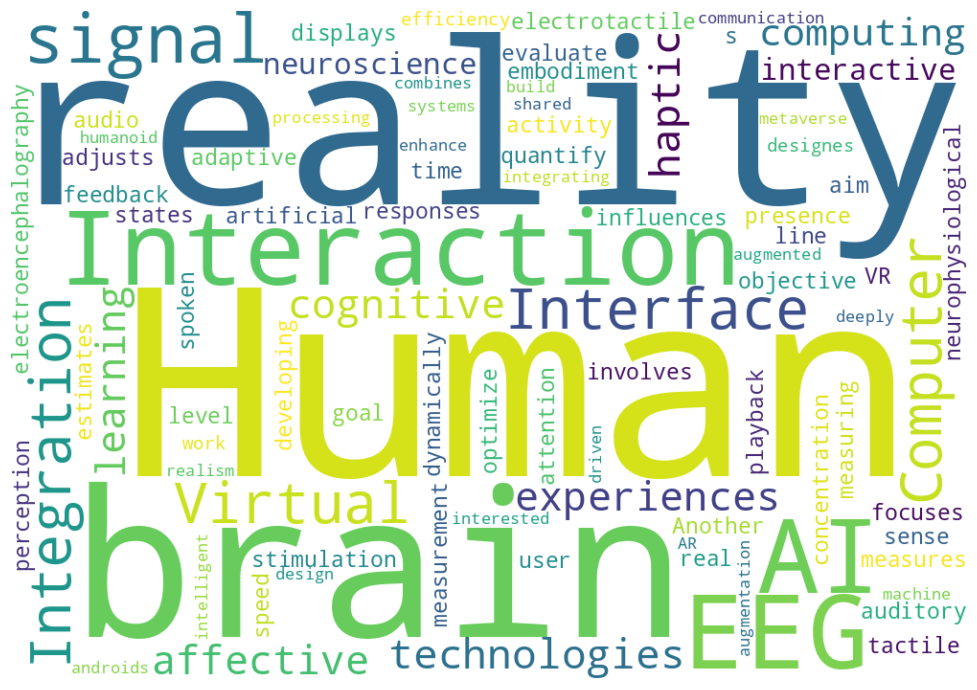

Human-AI Interaction
ユーザを深く理解し、状況に応じて柔軟に振る舞えるAIの実現に関心があります。AIを単なるツールではなく、人が親しみを感じられる存在として捉え、人とAIが共存し、ともに進化できる関係を探究しています。
人の感覚・知覚・認知メカニズムを探求し、その知見から人とコンピュータ・AIとの間の新しいインタラクションを実現するシステムを設計・開発しています。
現在はHuman-AI Interaction、Virtual Reality、Brain-Computer Interfaceを中心に、分野横断的なテーマに取り組んでいます。
専門に限らず様々な分野において、基礎研究や応用研究の成果を技術開発や社会実装へと繋げることで、実社会での価値に変えていくことを志しています。
研究、技術開発、社会実装の循環や相互作用を活性化させ、科学的知見を実社会の価値に変えていく
真理を追究し、モノ・サービスを作り、その価値を社会に届けられるようになる
実現したいことを基軸として、分野横断的に必要な知識・スキルを習得しながらアイディアを具現化する
価値ある成果は他者との協働から生まれ、協働は相互の信頼の上に成り立ちます。報告・連絡・相談や時間厳守といった基本を徹底し、日々信頼を積み重ねることを大切にしています。
実社会で価値を生む技術には、専門分野への深い理解と、関連領域にわたる幅広い知識の両方が必要だと考えています。そのため、専門性を深めるとともに、基礎研究から社会実装まで、各段階への理解と経験を広げています。
既存事例を調査し、研究開発の計画を入念に練る一方で、早い段階からプロトタイプをつくり、検証を始めます。そこで得た気づきを計画に反映するサイクルを回し、より早く確かな成果や結論にたどり着くことを目指しています。
常に周囲へアンテナを張り、面白いと感じた機会には躊躇せず飛び込むことを大切にしています。機会が与えられるのを待つだけでなく、必要な機会は自らつくる姿勢で日々行動しています。
研究開発の成果を、国や文化を越えて人々の生活に役立つ価値へつなげたいと考えています。そのため、多様な背景を持つ人との協働を大切にし、国際的な経験を通じて、異なる視点を理解し協働するための土台を築いています。
人生の岐路では、周囲の選択や流行に流されず、自分が本当に探究したいことを基準に進路を選んできました。これからも関心の変化を受け入れながら、その根底にある好奇心を大切にします。
ユーザを深く理解し、状況に応じて柔軟に振る舞えるAIの実現に関心があります。AIを単なるツールではなく、人が親しみを感じられる存在として捉え、人とAIが共存し、ともに進化できる関係を探究しています。
現実感を生み出す人間の感覚・知覚メカニズムを探究し、その知見に基づく要素技術の開発を通じて、より高い現実感を提示できるVRの実現に関心があります。
ユーザの脳波から認知状態や感情を推定し、その結果に応じてユーザとのインタラクションを適応的に変化させるパッシブBCI（Passive Brain-Computer Interface）に関心があります。
